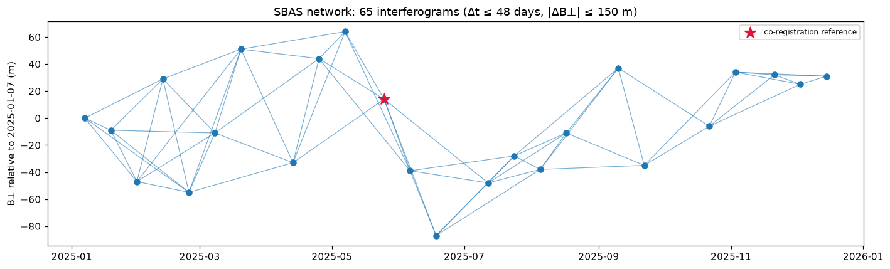
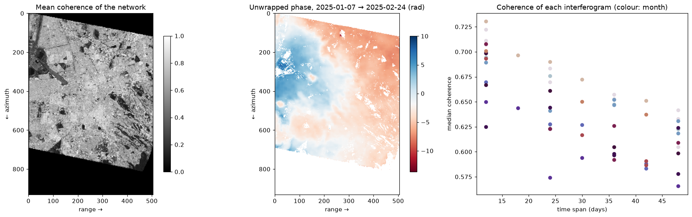
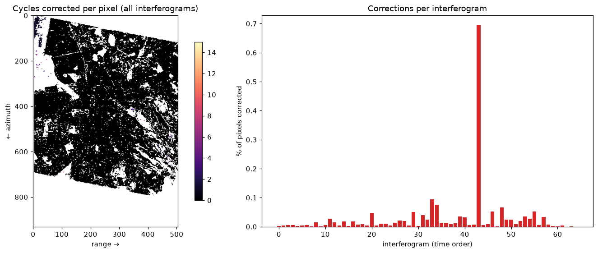
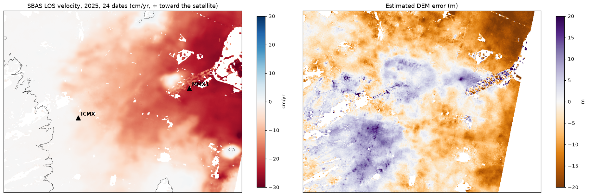
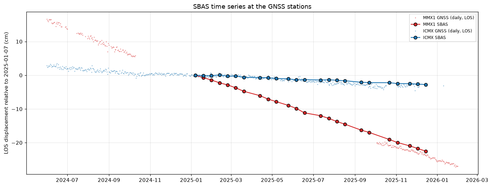

This notebook explains the Small Baseline Subset (SBAS) method for InSAR time series and applies it with GeoLattice to 24 Sentinel-1 acquisitions of 2025 over Mexico City, from the interferogram network to the displacement time series.
Overview
SBAS (Berardino et al., 2002) is a multi-temporal InSAR method that estimates ground displacement time series over distributed scatterers: fields, bare soil, sparse vegetation, semi-natural land. These are areas where no single dominant reflector exists.
Where PS-InSAR uses a single reference image and keeps only very stable points, SBAS works the other way around. It forms many interferograms between image pairs with short spatial and temporal baselines, so each interferogram stays as coherent as possible. It then multilooks to reduce noise and inverts the whole network to recover displacement at every acquisition date.
The short baselines matter because they limit the two main sources of decorrelation:
Decorrelation source
Controlled by
Why
Spatial (geometric)
Short perpendicular baseline \(B_\perp\)
Large \(B_\perp\) changes the look angle and the scattering response
Temporal
Short time interval \(\Delta t\)
Vegetation growth, moisture, and surface change accumulate over time
The trade-off is resolution. Multilooking averages neighboring pixels, so SBAS gives area-based estimates at roughly 30 to 100 m spacing rather than PS’s full resolution.
Core concepts
Learning objectives
Build a small-baseline interferogram network from limits on temporal baseline and perpendicular baseline.
Set up the SBAS design matrix that links each interferogram to the phase at every acquisition date.
Explain how a velocity parameterization and an SVD solution bridge a gap that splits the network.
Form, multilook, filter and unwrap the Mexico City interferograms, and reference them to one stable pixel.
Detect unwrapping errors with phase closure and correct them by whole cycles.
Estimate DEM error and an atmospheric phase screen, then invert the network for displacement at each date.
Geocode the line-of-sight velocity and compare it with GNSS, the 12-date SBAS map and the PS-InSAR points.
Contents
Building the interferogram network
Interferogram processing
The inversion
Separating error terms
Known limitations
SBAS vs PS-InSAR
Sentinel-1 SBAS workflow
SBAS with GeoLattice: Mexico City, 24 Sentinel-1 dates of 2025
Summary, exercises and references
Building the interferogram network
Given \(N\) coregistered SLCs at times \(t_1, \dots, t_N\), choose \(M\) interferometric pairs \((i, j)\) subject to constraints such as:
Sequential network: each image paired with its 3 to 5 nearest neighbors in time.
Baseline-threshold network: all pairs within, for example, 150 to 200 m and 60 to 120 days. Sentinel-1’s tight orbital tube means \(B_\perp\) is usually small, so the temporal limit dominates.
Delaunay or minimum spanning tree networks in the baseline-time plane.
Coherence-based pruning: drop interferograms with low average coherence, such as winter snow pairs.
The network is usually plotted in the \((t, B_\perp)\) plane, with images as nodes and interferograms as edges.
If the network splits into disconnected subsets (for example, after a data gap), the original SBAS handles this with the SVD minimum-norm solution, described under Network inversion by SVD. Most modern tools instead require or enforce a fully connected network.
Interferogram processing
For each pair \((i, j)\):
Form the interferogram\(I_{ij} = S_j S_i^*\) and remove flat-earth and topographic phase using a DEM.
Multilook, for example 20 × 4 looks in range × azimuth for Sentinel-1 IW, giving about 50 to 60 m ground pixels. Optionally apply a Goldstein or adaptive filter.
computed over the multilook window. 4. Unwrap each interferogram spatially, typically with SNAPHU or a minimum cost flow (MCF) algorithm, masking low-coherence pixels. 5. Reference all interferograms to a common stable point or area.
Unlike PS, SBAS unwraps each 2-D interferogram first and then inverts. The redundant network later helps detect unwrapping errors.
The inversion
Phase model
For pixel \(x\), the unwrapped phase of interferogram \(k\) between \(t_{i_k}\) and \(t_{j_k}\) is:
\(\boldsymbol{\phi} = [\phi(t_2), \dots, \phi(t_N)]^T\) are the unknown phases, one per date.
\(\mathbf{A}\) is the \(M \times (N-1)\) incidence matrix. Row \(k\) has \(+1\) at the secondary date \(j_k\) and \(-1\) at the reference date \(i_k\).
Velocity parameterization
If the network has disconnected subsets, \(\mathbf{A}\) is rank-deficient and the cumulative phase can jump between subsets. Berardino et al. avoid this by solving for the mean velocity between consecutive dates:
Here row \(k\) of \(\mathbf{B}\) contains the time intervals \((t_{n+1} - t_n)\) for every interval spanned by interferogram \(k\), and zeros elsewhere. They solve this with SVD, which gives the minimum-norm velocity solution. The result is a physically sensible time series that bridges the gaps, and integrating \(\mathbf{v}\) gives the displacement history.
Weighted least squares
Modern implementations such as MintPy use weighted least squares:
The weights \(\mathbf{W}\) come from coherence, usually through the phase variance implied by \(\gamma\) and the number of looks. They also report temporal coherence as a quality index for each pixel.
Optional parametric model
The time series can be fitted to a model:
\[
d(t) = d_0 + v\,t + \tfrac{1}{2}a\,t^2 + A\sin(2\pi t) + B\cos(2\pi t) + \text{steps at known events}
\]
This yields a velocity, an acceleration, and seasonal amplitudes. The DEM error \(\Delta h\) can be estimated jointly, using the \(B_\perp\) dependence (Fattahi & Amelung, 2013).
Separating error terms
DEM error. Estimate it from the correlation of phase with \(B_\perp\). It is smaller for Sentinel-1 than for older missions because the baselines are small.
Atmospheric delay. This is the largest error for C-band SBAS. Options:
Weather-model corrections (ERA5 via PyAPS, GACOS).
Spatio-temporal filtering: atmosphere is spatially correlated but random in time, while deformation is temporally correlated.
Phase-elevation regression for stratified troposphere in mountains.
Ionosphere. Usually minor for C-band at mid-latitudes. Range split-spectrum correction exists for L-band and for strong ionospheric conditions.
Orbital ramps and solid-earth tides. Remove planar trends and model tides.
Unwrapping errors. These appear as \(2\pi\) jumps. Detect them through phase closure: for a triplet of interferograms \((i, j)\), \((j, k)\), \((i, k)\):
Non-zero integer multiples of \(2\pi\) flag unwrapping errors, which MintPy can correct or mask.
Known limitations
Resolution loss. Multilooking blurs small features such as individual buildings or narrow landslides. PS or PS+DS methods do better there.
Unwrapping each interferogram. In areas of low coherence or rapid deformation (more than about \(\lambda/4 \approx 1.4\) cm between images for C-band), unwrapping can fail.
Short-baseline phase bias (“fading signal”). Ansari et al. (2021) and later work showed that networks of only short-temporal-baseline interferograms can produce biased velocities in vegetated or moist areas. The cause is non-zero, non-integer phase closure from changes in soil moisture and vegetation. Remedies:
add longer-baseline interferograms,
use phase linking (EMI, Dolphin),
apply explicit bias correction (MintPy includes one).
Network gaps. Large data gaps, for example after Sentinel-1B’s failure in December 2021, weaken connectivity.
Relative measurement. All results are relative to the reference point and in the LOS direction.
SBAS vs PS-InSAR
SBAS
PS-InSAR
Target
Distributed scatterers
Point scatterers
Interferograms
Many short-baseline pairs
\(N-1\) pairs with one reference
Spatial processing
Multilooked and filtered
Full resolution, no multilooking
Unwrapping
2-D per interferogram, then inversion
Sparse 3-D network after PS selection
Coverage
Good in rural and natural terrain
Dense in urban areas, sparse in vegetation
Deformation model
Not required (free-form time series)
Ferretti: usually linear; StaMPS: free-form
Main risk
Unwrapping errors, fading bias, blurring
Low point density outside built areas
Hybrids:
StaMPS-SBAS works on slowly decorrelating filtered phase (SDFP) pixels at full resolution and can be merged with PS (Hooper, 2008).
Phase-linking methods (SqueeSAR, MiaplPy, Dolphin) use all pairwise information to estimate an optimal single-reference phase series for both PS and DS.
Sentinel-1 SBAS workflow
1. Download SLC Data: Obtain \(N\) SLC images \(\{S_1, S_2, \dots, S_N\}\) and the corresponding precise orbit ephemerides.
2. Coregistration: All SLCs are geometrically aligned (coregistered) to a common reference date (say, \(S_{ref}\)) so that pixels correspond spatially: \(S_k(x, y)\) aligns to ground location \((x, y)\) across all \(k\).
3. Interferogram Network Construction:
Form a set of interferometric pairs \((i, j)\) such that both their temporal baseline \(\Delta T_{ij}\) and perpendicular spatial baseline \(\Delta B_\perp^{ij}\) are below chosen thresholds. The network is typically sparse to avoid large decorrelation.
4. Interferogram Generation & Unwrapping:
For each selected \((i, j)\): - Compute the wrapped phase difference: \[
\phi_{ij}(\mathbf{r}) = \arg\left[ S_i(\mathbf{r}) S_j^*(\mathbf{r}) \right]
\] where \(*\) denotes complex conjugate. - Apply filtering and unwrap phases in space to obtain \(\tilde{\phi}_{ij}(\mathbf{r})\).
5. Network Inversion for Displacement:
For a stack of \(N\) images, each interferogram measures relative phase changes: \[
\tilde{\phi}_{ij} (\mathbf{r}) = \phi_j(\mathbf{r}) - \phi_i(\mathbf{r}) + \delta_{ij}(\mathbf{r})
\] where \(\delta_{ij}\) encompasses atmospheric, orbital, and noise contributions. Solve the system of equations (one per interferogram) for the phase (displacement) at each acquisition, often via least-squares or singular value decomposition (SVD) inversion. The phase is related to displacement as: \[
d_k(\mathbf{r}) = \frac{\lambda}{4\pi} \, \phi_k(\mathbf{r})
\] where \(\lambda\) is the radar wavelength.
6. Atmospheric Delay Correction:
Remove atmospheric artifacts by estimating \(\delta_{ij}\) (with external models, e.g. GACOS or ERA5, or spatial filtering).
7. DEM Error Correction:
The measured phase comprises a DEM error term; estimate a constant DEM offset for each pixel or scene and subtract it.
8. Velocity and Displacement Time Series:
The per-date displacement estimates \(d_k(\mathbf{r})\) yield a time series for every ground pixel; from the linear fit, estimate velocity: \[
v(\mathbf{r}) = \frac{d_{N}(\mathbf{r}) - d_1(\mathbf{r})}{T_{N} - T_1}
\] where \(T_k\) is the time of scene \(k\).
9. Reference Point Calibration:
Remove residual phase bias by “zeroing” the displacement to a non-moving reference pixel or calibrate against a GNSS station.
SBAS with GeoLattice: Mexico City, 24 Sentinel-1 dates of 2025
This section runs the Sentinel-1 SBAS workflow above on real data with GeoLattice’s insar.sbas module. The site is Mexico City, as in the DInSAR (07_03_01_04) and PS-InSAR (07_03_01_05) notebooks, so the three methods can be compared directly, and all three are checked against GNSS.
GeoLattice forms interferograms as earlier · conj(later) (the complex conjugate of \(S_j S_i^*\) above), so insar.phase_to_los gives motion toward the satellite as positive and subsidence is negative.
Data
The 24 dates and their burst cache are shared with the PS-InSAR notebook (Data/08_remote_sensing/08_03_radar/dinsar_mexico_city/); anything missing is downloaded (NASA Earthdata login in ~/.netrc). GNSS positions come from the Nevada Geodetic Laboratory. The comparisons use the outputs of the DInSAR and PS-InSAR notebooks when they exist.
Setup
Installation. This notebook needs installation option 5 (core, spatial analysis, spatial statistics, geostatistics and remote sensing): pip install "geolattice[remote-sensing]". See “Installation options” in the GeoLattice README.
Code
# Setup for the Mexico City SBAS example: libraries, the cache shared with the DInSAR and# PS-InSAR notebooks, the burst window, the 24 dates of 2025, the multilook, and the GNSS stations.import warningswarnings.filterwarnings("ignore") # hide library warningsimport time # timingimport urllib.request # download GNSS files over HTTPfrom pathlib import Path # file pathsimport asf_search as asf # ASF search and downloadimport geopandas as gpd # vector data (PS points)import matplotlib.pyplot as plt # figuresimport numpy as np # arraysimport pandas as pd # tablesimport rioxarray # noqa: F401 (registers the .rio accessor on xarray)import xarray as xr # labelled rastersfrom pyproj import Transformer # coordinate transformationsfrom geolattice import rsense as rs # GeoLattice remote sensingfrom geolattice.rsense import insar, sar # InSAR and SAR processing modulesplt.rcParams.update({"figure.dpi": 110}) # figure resolutionCACHE = Path("../../../../Data/08_remote_sensing/08_03_radar/dinsar_mexico_city") # bursts, orbits, DEM and GNSS files, reused on later runsOUT = Path("outputs/sbas_mexico_city") # the velocity map, DEM-error map and displacement time seriesfor d in (CACHE, OUT): # create the cache and output folders d.mkdir(parents=True, exist_ok=True) # parents=True also creates missing parent foldersAOI = (-99.24, 19.34, -99.02, 19.50) # lon/lat of the cached burst windows, western hills to the old lake bedUTM ="EPSG:32614"# WGS84 / UTM zone 14N, the map grid used when the result is geocodedPOL ="VV"# co-polar channel; it stays coherent longer than VH over the cityBURSTS = ["041_086877_IW1", "041_086878_IW1"] # relative orbit 41, descending; two bursts so ESD has an overlap# the 24 acquisition dates of 2025, in time orderDATES =sorted(["2025-01-07", "2025-01-19", "2025-01-31", "2025-02-12", "2025-02-24", "2025-03-08","2025-03-20", "2025-04-13", "2025-04-25", "2025-05-07", "2025-05-25", "2025-06-06","2025-06-18", "2025-07-12", "2025-07-24", "2025-08-05", "2025-08-17", "2025-09-10","2025-09-22", "2025-10-22", "2025-11-03", "2025-11-21", "2025-12-03", "2025-12-15"])REF ="2025-05-25"# co-registration reference: the date that best centres the stackLOOKS = (3, 12) # azimuth x range looks: about 42 m x 50 m on the groundSTATIONS = {"MMX1": (-99.0684, 19.4317), "ICMX": (-99.1709, 19.4056)} # NGL GNSS stations (lon, lat)# version, number of dates and looksprint(f"geolattice.rsense {rs.__version__} | {len(DATES)} dates | looks {LOOKS}")# ASF searches are cached as small JSON files beside the bursts, so later runs need no network.import json # read and write the cached search resultsfrom types import SimpleNamespace # stand-in for an ASF product read back from the cachedef asf_cached(name, stack=False, **query):"""ASF search results as objects with .properties and .geometry, cached under CACHE / name. The first run searches ASF online and saves the properties and footprint of every result. Later runs read that file instead. stack=True keeps the baseline stack of the first result. """ path = CACHE / name # the cached searchif path.exists(): # searched before: read the local file rows = json.loads(path.read_text())else: # first run: search ASF online and save the result res = asf.search(**query) # the search itself rows = [{"properties": p.properties, "geometry": p.geometry} # results or their stackfor p in (res[0].stack() if stack else res)] path.write_text(json.dumps(rows, default=str)) # keep it for the next runreturn [SimpleNamespace(**r) for r in rows] # objects with .properties and .geometry, like ASF products
Each date’s two IW1 bursts are read from the cache (or downloaded and cropped to the AOI), precise orbits are applied, and sar.coregister_stack co-registers all 23 secondary dates to the reference date with DEM-assisted back-geocoding and ESD. The stack keeps, for every date, the slant-range difference at the DEM surface (for topographic phase removal) and kz, the range difference per metre of height (for DEM-error correction).
Code
# Steps 1 and 2. Precise orbits, the DEM and the burst downloads are the same chain as the# DInSAR and PS-InSAR notebooks. Every secondary date is then co-registered to 25 May 2025,# and the stack keeps the range difference and kz that the later steps need.# 1. Both bursts on each chosen date. The search window is one day past the last date so that# date is included; the list comprehension then drops any extra burst that is not in DATES.found = asf_cached("asf_bursts_2025.json", platform=asf.PLATFORM.SENTINEL1, processingLevel="BURST", fullBurstID=BURSTS, polarization=POL, start=DATES[0], end=str(pd.Timestamp(DATES[-1]) + pd.Timedelta(days=1)))res_all = [p for p in found if p.properties["startTime"][:10] in DATES] # keep the chosen dates# 2. One row per burst: date, satellite, start time and size. The grouping below is by date,# because one orbit file covers both bursts of a pass.acq = pd.DataFrame([{"date": p.properties["startTime"][:10], "platform": p.properties["platform"],"start": pd.Timestamp(p.properties["startTime"]).tz_convert(None),"MB": float(p.properties["bytes"]) /1e6} for p in res_all])# 3. One POEORB file per date, from the open AWS bucket. crop_orbit keeps the minutes around# the acquisition; the 6 s margin covers the burst length.eof = {d: sar.download_orbit(g.platform.iloc[0], g.start.min(), CACHE /"orbits") for d, g in acq.groupby("date")}# precise orbit of each date, cropped to the bursts' time spanorbits = {d: sar.crop_orbit(eof[d], g.start.min(), g.start.max() + pd.Timedelta(seconds=6)) for d, g in acq.groupby("date")}# 4. Copernicus GLO-30 over a box 0.05° larger than the AOI, so the edges still have elevation.# The STAC heights are above the EGM2008 geoid. Orbits and the range-Doppler equations live# on the WGS84 ellipsoid, so geoid_to_ellipsoid adds the geoid undulation before they are used.# A later run finds the GeoTIFF and skips the download.dem_file = CACHE /"copdem30_geoid.tif"ifnot dem_file.exists(): # download the DEM onceimport planetary_computer as pc # Planetary Computer URL signingimport pystac_client # STAC search clientfrom rioxarray.merge import merge_arrays # mosaic several rasters# open the Planetary Computer STAC catalogue cat = pystac_client.Client.open("https://planetarycomputer.microsoft.com/api/stac/v1", modifier=pc.sign_inplace) box = (AOI[0] -0.05, AOI[1] -0.05, AOI[2] +0.05, AOI[3] +0.05) # the AOI plus a 0.05 degree margin# mosaic the clipped Copernicus DEM tiles and save merge_arrays([rioxarray.open_rasterio(i.assets["data"].href).squeeze("band", drop=True).rio.clip_box(*box)for i in cat.search(collections=["cop-dem-glo-30"], bbox=box).items()]).astype("float32").rio.to_raster(dem_file)dem_geoid = rioxarray.open_rasterio(dem_file).squeeze(drop=True) # the DEM (heights above the EGM2008 geoid)ell_file = CACHE /"copdem30_ellipsoid.tif"# the same DEM above the WGS 84 ellipsoid, saved by an earlier runif ell_file.exists(): # converted before: read it from the local drive dem_ell = rioxarray.open_rasterio(ell_file).squeeze(drop=True)else: # first run: add the EGM2008 geoid undulation (PROJ reads the geoid grid online) and save it dem_ell = insar.geoid_to_ellipsoid(dem_geoid, "EGM2008") dem_ell.rio.to_raster(ell_file) # keep it for the next runSLC = CACHE /"slc"# folder for the cropped burstsSLC.mkdir(exist_ok=True) # create it if neededdef fetch_bursts(date): # download and crop the bursts of one date (skipped when cached)# Download one date, crop each burst to the AOI, and cache it. A later run finds the .npy files and returns.ifall((SLC /f"{date}_{b}.npy").exists() for b in BURSTS):return# a. The two burst products for this date, downloaded as GeoTIFF + annotation XML. res = asf.search(platform=asf.PLATFORM.SENTINEL1, processingLevel="BURST", fullBurstID=BURSTS, polarization=POL, start=date, end=str(pd.Timestamp(date) + pd.Timedelta(days=1))) raw = CACHE /"raw"# folder for the raw downloads raw.mkdir(exist_ok=True) # create it if needed rs.access.asf_download(res, raw) # download the bursts from ASFfor p in res: # each burst bid, name = p.properties["burst"]["fullBurstID"], p.properties["fileID"] # burst ID and file name# the image and its annotation XML tif, xml =next(raw.glob(f"{name}*.tif*")), next(raw.glob(f"{name}*.xml"))# b. The annotation holds timing, Doppler polynomials, the orbit and the geolocation grid.# swath is the last three characters of the burst id ("IW1"). a = sar.read_slc_annotation(xml, swath=bid[-3:], polarisation=POL) i = p.properties["burst"]["burstIndex"] # index of the burst in the annotation# c. Column window covering the AOI, plus 300 samples of margin on each side. c = sar.burst_window(a, i, AOI, margin=300) z = sar.read_slc_burst(tif, a, i, cols=c) # read only the AOI columns of the burst# d. Store the complex burst as two int16 planes (real, imag). The XML and a small JSON# of the crop (burst index, columns kept) stay beside it. The GeoTIFF is then deleted. np.save(SLC /f"{date}_{bid}.npy", np.stack([z.real, z.imag]).astype("int16")) xml.replace(SLC /f"{date}_{bid}.xml") # keep the annotation XML in the cache# save the burst metadata as JSON (SLC /f"{date}_{bid}.json").write_text(pd.Series({"burst_index": i, "col0": c[0], "col1": c[1], "file": name,"platform": p.properties["platform"]}).to_json()) tif.unlink() # delete the large original TIFF# 5. Fetch or reload every date. The cache is shared with the DInSAR and PS notebooks, so# dates already fetched there are reused.t0 = time.time()for date in DATES: # every date fetch_bursts(date) # download and crop its bursts# 6. Rebuild each date as the dict coregister_stack expects: one SLC, annotation, burst index# and first kept column per burst. apply_orbit_file replaces the metadata orbit with the# cropped POEORB state vectors. The whole AOI is processed, so each SLC is read in full.members = {}for date in DATES: # every date m = {"slc": [], "ann": [], "burst": [], "col0": []} # the bursts of this date as listsfor b in BURSTS: # every burst meta = pd.read_json(SLC /f"{date}_{b}.json", typ="series") # burst metadata ri = np.load(SLC /f"{date}_{b}.npy") # stored real and imaginary parts m["slc"].append((ri[0] +1j* ri[1]).astype("complex64")) # rebuild the complex SLC# annotation with the precise orbit applied m["ann"].append(sar.apply_orbit_file(sar.read_slc_annotation(SLC /f"{date}_{b}.xml", swath=b[-3:], polarisation=POL), orbits[date]))# burst index and first range sample kept m["burst"].append(int(meta.burst_index)); m["col0"].append(int(meta.col0)) members[date] = m # the bursts of this dateprint(f"{len(DATES)} dates x {len(BURSTS)} bursts ready in {time.time() - t0:.0f} s") # run time# 7. Co-register the 23 secondary dates to the reference. DEM-assisted back-geocoding resamples# each burst onto the reference radar grid; esd=True then removes the residual azimuth shift# measured in the burst overlap (enhanced spectral diversity). The result keeps, per date, the# resampled SLC, the slant-range difference at the DEM surface, and kz (metres of range per# metre of height), which the DEM-error step uses.t0 = time.time()# co-register every date to the reference (back-geocoding plus ESD)co = sar.coregister_stack(members[REF], {d: members[d] for d in DATES if d != REF}, dem_ell, esd=True)a0 = members[REF]["ann"][0] # annotation of the first reference burstlam = a0["wavelength"] # radar wavelength (m)# run time and ESD correctionsprint(f"co-registration of {len(DATES) -1} dates: {time.time() - t0:.0f} s; ESD corrections "f"{min(v['esd']['shift_lines'] for v in co['stack'].values()):+.4f} to {max(v['esd']['shift_lines'] for v in co['stack'].values()):+.4f} pixels")
24 dates x 2 bursts ready in 5 s
co-registration of 23 dates: 1059 s; ESD corrections -0.0151 to +0.0166 pixels
The interferogram network
insar.sbas_network keeps every pair whose time span and perpendicular-baseline difference are both within limits. With acquisitions roughly every 12 to 24 days, a 48-day limit links each date to its next two or three neighbours; the baselines are all small (within about 150 m), so the 150 m limit hardly bites, as the theory above expects for Sentinel-1. insar.network_components confirms the network is connected.
Code
# Step 3. Build the small-baseline network. stack() on one burst lists every acquisition of# that same burst and the perpendicular baseline of each one relative to the burst we searched for.# 1. The 7 January acquisition of burst 086877 is only the seed of the search. Baselines come# back relative to that date, which is enough: a pair is kept or dropped on the difference# between two dates, so the zero point of B⊥ cancels.first_stack = asf_cached("asf_stack_2025.json", stack=True, platform=asf.PLATFORM.SENTINEL1, processingLevel="BURST", fullBurstID=BURSTS[0], polarization=POL, start=DATES[0], end=str(pd.Timestamp(DATES[0]) + pd.Timedelta(days=1)))# 2. One perpendicular baseline per acquisition. drop_duplicates keeps a single row if the# stack lists the same date twice, and reindex lines the values up with DATES.stack = pd.DataFrame([{"date": str(pd.Timestamp(p.properties["startTime"]).tz_convert(None).date()),"bperp": p.properties["perpendicularBaseline"]} for p in first_stack]).dropna().drop_duplicates("date")bperp = stack.set_index("date").bperp.reindex(DATES).values # perpendicular baseline of every date# 3. Keep every pair whose time span is at most 48 days and whose |ΔB⊥| is at most 150 m.# With a 12-day repeat that links each date to its next two or three neighbours. The pairs# come back as (earlier, later). network_components counts the disconnected pieces of the# graph; one piece means every date can reach every other date through some chain of pairs.PAIRS = insar.sbas_network(DATES, bperp, max_temporal_days=48, max_perpendicular=150)# time span of every interferogram (days)spans = np.array([(pd.Timestamp(b) - pd.Timestamp(a)).days for a, b in PAIRS])# number of interferograms and their spansprint(f"{len(PAIRS)} interferograms from {len(DATES)} dates; time spans {spans.min()}-{spans.max()} days (median {np.median(spans):.0f}); "f"{len(insar.network_components(PAIRS, DATES))} connected subset(s)")# 4. The network in the (time, B⊥) plane. Each line is one interferogram. The star marks the# date everything was co-registered to; the pairs themselves join neighbours to neighbours.fig, ax = plt.subplots(figsize=(13, 4))bp_of =dict(zip(DATES, bperp)) # date -> perpendicular baselinefor a, b in PAIRS: # each interferogram# a line between its two dates ax.plot([pd.Timestamp(a), pd.Timestamp(b)], [bp_of[a], bp_of[b]], color="tab:blue", lw=0.8, alpha=0.6)ax.scatter(pd.to_datetime(DATES), bperp, s=35, color="tab:blue", zorder=3) # the dates# the co-registration reference dateax.scatter([pd.Timestamp(REF)], [bp_of[REF]], s=150, marker="*", color="crimson", zorder=4, label="co-registration reference")# labels and titleax.set(ylabel=f"B⊥ relative to {DATES[0]} (m)", title=f"SBAS network: {len(PAIRS)} interferograms (Δt ≤ 48 days, |ΔB⊥| ≤ 150 m)")ax.legend(fontsize=8); plt.tight_layout(); plt.show() # legend, arrange and draw
65 interferograms from 24 dates; time spans 12-48 days (median 30); 1 connected subset(s)

Interferogram generation and unwrapping
insar.interferogram_stack processes the whole network in one call. For each pair it forms the differential interferogram from the co-registered stack (topographic phase removed with each date’s range difference), debursts, multilooks by 3 × 12, estimates coherence over a further 3 × 3 window, applies a Goldstein filter and unwraps with SNAPHU in DEFO mode, masking coherence below 0.25. It returns the stack on the multilooked radar grid, with each date’s kz and the geometry needed later for geocoding.
Code
# Step 4. Form, multilook, filter and unwrap every interferogram of the network in one call.# 1. interferogram_stack takes the reference bursts, the co-registered secondaries and the pairs.# For each pair it forms earlier · conj(later), removes the topographic phase with the difference# of the two dates' range offsets, debursts, and multilooks by LOOKS. alpha=0.6 is the Goldstein# filter strength. cost="defo" tells SNAPHU to expect deformation, and pixels with coherence# below 0.25 are masked before unwrapping.t0 = time.time()# every interferogram of the network: formed, multilooked, filtered and unwrappedds = insar.interferogram_stack(members[REF], co, PAIRS, reference_date=REF, looks=LOOKS, alpha=0.6, cost="defo", min_coherence=0.25)# number, size and run timeprint(f"{len(PAIRS)} interferograms ({ds.sizes['y']} x {ds.sizes['x']} pixels) in {time.time() - t0:.0f} s")# 2. Mean coherence over the network, and the median coherence of each interferogram.# Pixels with no data are stored as 0 and left out of that median.mean_coh = ds.coherence.mean("pair")# median coherence of each interferogrampair_coh = ds.coherence.where(ds.coherence >0).median(("y", "x")).valuesprint(f"median coherence per interferogram {pair_coh.min():.2f}-{pair_coh.max():.2f}; "# its rangef"lowest: {PAIRS[int(np.argmin(pair_coh))][0]} → {PAIRS[int(np.argmin(pair_coh))][1]}")# 3. The mean-coherence map, the unwrapped phase of the longest pair, and coherence against# time span. aspect stretches range so the pixels look square on the ground. The colour of# each point is the month of the earlier date.fig, axes = plt.subplots(1, 3, figsize=(17, 5.2))# pixel aspect ratio in ground unitsasp = ds.attrs["azimuth_spacing"] / (ds.attrs["range_spacing"] / np.sin(np.radians(float(ds.incidence.median()))))# mean coherence of the networkim = axes[0].imshow(mean_coh, cmap="gray", vmin=0, vmax=1, aspect=asp); axes[0].set_title("Mean coherence of the network")plt.colorbar(im, ax=axes[0], shrink=0.75) # colour bark =int(np.argmax(spans)) # the pair with the longest time span# one unwrapped interferogramim = axes[1].imshow(ds.unwrapped[k], cmap="RdBu", aspect=asp); axes[1].set_title(f"Unwrapped phase, {PAIRS[k][0]} → {PAIRS[k][1]} (rad)")plt.colorbar(im, ax=axes[1], shrink=0.75) # colour bar# coherence against time span, coloured by monthaxes[2].scatter(spans, pair_coh, c=[pd.Timestamp(a).month for a, _ in PAIRS], cmap="twilight", s=30)# labels and titleaxes[2].set(xlabel="time span (days)", ylabel="median coherence", title="Coherence of each interferogram (colour: month)")for ax in axes[:2]: # the two image panels ax.set(xlabel="range →", ylabel="← azimuth") # axis labelsplt.tight_layout(); plt.show() # arrange and draw
65 interferograms (931 x 505 pixels) in 612 s
median coherence per interferogram 0.57-0.73; lowest: 2025-05-25 → 2025-07-12

The 65 interferograms take about 10 minutes and are 931 × 505 pixels each. Their median coherence ranges from 0.57 to 0.73. The least coherent is the longest pair spanning the start of the rainy season, 25 May → 12 July. Coherence falls steadily with the time span (from about 0.70 at 12 days to about 0.60 at 48 days), but the city stays usable throughout. The longest interferogram shows the subsidence bowl as several cycles of unwrapped phase over the eastern lake bed.
Reference point
All interferograms are referred to the same pixel: the most coherent 7 × 7 neighbourhood (insar.select_reference_point, on the network’s mean coherence) in the volcanic hills of the west, which stand on rock and are stable. insar.reference_to_point subtracts its value from every interferogram.
Code
# Refer every interferogram to one stable pixel. Unwrapping adds an arbitrary constant to# each interferogram; subtracting the same place from all of them removes that constant.# 1. The volcanic hills of the west stand on rock. Keep pixels above 2350 m (ellipsoidal)# that are also coherent, and drop a 10-pixel border so the 7 x 7 window stays inside the image.stable = (ds.dem_height.values >2350) & (mean_coh.values >0.5)inner = np.zeros_like(stable) # pixels away from the edgeinner[10:-10, 10:-10] =True# a 10-pixel border is excluded# 2. select_reference_point returns the centre of the 7 x 7 neighbourhood with the highest# mean coherence inside that mask. reference_to_point subtracts the median of the same# window from every interferogram, each layer on its own, so one noisy pixel cannot set the zero.REF_PT = insar.select_reference_point(mean_coh.values, mask=stable & inner, window=7)# all interferograms relative to the reference pixelunw = insar.reference_to_point(ds.unwrapped.values, REF_PT, window=7)# coherence and height at the reference pixelprint(f"reference pixel {REF_PT}: mean coherence {float(mean_coh[REF_PT]):.2f}, height {float(ds.dem_height[REF_PT]):.0f} m (ellipsoidal)")
reference pixel (487, 438): mean coherence 0.95, height 2399 m (ellipsoidal)
Unwrapping errors: phase closure
For every closed triplet of interferograms, insar.loop_closure sums the phase around the loop. Correctly unwrapped, it is close to zero; a whole multiple of 2π flags an unwrapping error in one of the three. insar.correct_unwrapping_errors finds, for each pixel, the integer corrections with the fewest total cycles that close every loop (an exact integer programme per distinct pattern, as in MintPy’s phase-closure method) and applies them.
Code
# Detect and correct unwrapping errors from phase closure. Around a closed triplet the# unwrapped phases must sum to about zero; a whole multiple of 2π is an unwrapping error.# 1. loop_closure returns u_ij + u_jk − u_ik for every triplet the network contains, and the# interferogram indices of each triplet. A pixel is usable only when every interferogram# unwrapped there. Rounding the closure by 2π counts the integer cycles.closure, tri = insar.loop_closure(unw, PAIRS)valid = np.all(np.isfinite(unw), axis=0) # pixels valid in every interferogram# integer number of cycles in each loop closure before correctioncyc_before = np.abs(np.round(closure / (2* np.pi)))[:, valid]# 2. correct_unwrapping_errors finds, once per distinct pattern of those integer closures,# the corrections (cycles per interferogram) with the smallest total that close every loop,# then adds 2π times that correction. The second call measures what is left.t0 = time.time()# fix 2-pi unwrapping errors using the loop closuresunw_fixed, info = insar.correct_unwrapping_errors(unw, PAIRS)closure_after, _ = insar.loop_closure(unw_fixed, PAIRS) # loop closures after the correctioncyc_after = np.abs(np.round(closure_after / (2* np.pi)))[:, valid] # integer cycles after the correction# share of pixels with a closure error before and afterprint(f"{len(tri)} triplets; pixels with a non-zero integer closure: {np.mean(cyc_before.max(0) >0):.2%} before, "f"{np.mean(cyc_after.max(0) >0):.2%} after; corrected {info['pixels_corrected']:,} pixels "f"({info['patterns']} distinct closure patterns) in {time.time() - t0:.0f} s")# 3. The part of the closure that is not a whole cycle. angle(exp(i φ)) folds φ onto (−π, π],# so this is the residual once the nearest multiple of 2π has been removed.print(f"median |closure| (non-integer part, rad): {np.median(np.abs(np.angle(np.exp(1j* closure[:, valid])))):.3f}")n_fix = np.abs(info["corrections"]).sum(0) # cycles added, summed over interferograms# 4. Where the corrections fell, and what fraction of its pixels each interferogram had to change.fig, axes = plt.subplots(1, 2, figsize=(14, 5.2))# corrected cycles per pixelim = axes[0].imshow(np.where(valid, n_fix, np.nan), cmap="magma", vmin=0, vmax=max(3, int(np.nanmax(n_fix))), aspect=asp)# title and axis labelsaxes[0].set(title="Cycles corrected per pixel (all interferograms)", xlabel="range →", ylabel="← azimuth")plt.colorbar(im, ax=axes[0], shrink=0.75) # colour bar# share of pixels corrected in each interferogramper_ifg = np.mean(np.abs(info["corrections"])[:, valid] >0, axis=1)axes[1].bar(range(len(PAIRS)), 100* per_ifg, color="tab:red") # bar chart# labels and titleaxes[1].set(xlabel="interferogram (time order)", ylabel="% of pixels corrected", title="Corrections per interferogram")plt.tight_layout(); plt.show() # arrange and draw
65 triplets; pixels with a non-zero integer closure: 1.14% before, 0.23% after; corrected 2,814 pixels (617 distinct closure patterns) in 2 s
median |closure| (non-integer part, rad): 0.049

The 65 interferograms close 65 triplets. Before correction, 1.14 % of pixels have a non-zero whole-cycle closure in at least one triplet; the correction changes 2,814 pixels (617 distinct closure patterns, solved in about 2 seconds), leaving 0.23 %. The remaining misfits are not unwrapping errors: 71 % of them lie within 1 rad of ±π, where noise decides which way the closure rounds, and those pixels are less coherent (mean 0.60 against 0.68). The non-integer part of the closure is small, with a median of 0.05 rad, so the network has no sign of the large closure-phase bias that the theory warns about for vegetated areas. The corrections are concentrated: one interferogram needed them at 0.7 % of its pixels, every other one at less than 0.1 %.
Network inversion by SVD
insar.sbas_svd solves for the mean velocity between consecutive dates, weighting each interferogram by its coherence, and integrates to a time series (Berardino et al., 2002). With the SVD (minimum-norm) solution it also handles a disconnected network. To show this, the same data are inverted a second time after removing every interferogram that spans the gap between 18 June and 12 July, which splits the network in two.
Code
# Step 5. Invert the network for a phase at every date, then repeat the inversion on a# network that has been split in two.# 1. sbas_svd solves for the mean velocity between consecutive dates, weighted by coherence,# and integrates those velocities. The first date is zero. Coherence weights make it a# weighted problem, solved in chunks of pixels.t0 = time.time()# coherence-weighted SVD inversion: phase at every datets_phase = insar.sbas_svd(unw_fixed, PAIRS, weights=ds.coherence.values)# run timeprint(f"SVD inversion of {len(PAIRS)} interferograms at {valid.sum():,} pixels: {time.time() - t0:.0f} s")t_years = (pd.to_datetime(DATES) - pd.Timestamp(DATES[0])).days.values /365.25# time of each date in years# 2. Drop every interferogram that crosses the 18 June-12 July gap. What remains is two# subsets that share no pair. network_components lists them, largest first.gap = ("2025-06-18", "2025-07-12")# drop the interferograms that span the gapsplit = [(a, b) for a, b in PAIRS ifnot (a <= gap[0] and b >= gap[1])]keep = [PAIRS.index(p) for p in split] # their indicescomps = insar.network_components(split, DATES) # connected subsets of the split network# number of interferograms and subsetsprint(f"split network: {len(split)} interferograms, {len(comps)} subsets ({', '.join(f'{c[0]}…{c[-1]}'for c in comps)})")# 3. Plain least squares needs a connected network and raises when the design matrix is# rank-deficient. The SVD (minimum-norm) inversion still returns a series: with nothing# measuring the gap, it sets the velocity across that gap to zero and integrates through it.try: insar.sbas_inversion(unw_fixed[keep], split) # a plain least-squares inversion fails on a split networkexceptValueErroras e:print("plain least-squares inversion:", e) # print the error# the SVD (minimum-norm) inversion still worksts_split = insar.sbas_svd(unw_fixed[keep], split, weights=ds.coherence.values[keep])
SVD inversion of 65 interferograms at 266,975 pixels: 28 s
split network: 59 interferograms, 2 subsets (2025-01-07…2025-06-18, 2025-07-12…2025-12-15)
plain least-squares inversion: Interferogram network is disconnected; add pairs linking all subsets
DEM-error correction
A DEM error Δz adds the phase 4π/λ · kz(t) · Δz to each date, where kz follows the date’s perpendicular baseline. insar.dem_error_correction fits each pixel’s time series with a linear trend plus a term proportional to its kz history and removes that term (Fattahi & Amelung, 2013). The series is first converted to LOS displacement, where the DEM error appears as −kz · Δz.
Code
# Remove the DEM-error phase. A height error Δz shifts the range by kz · Δz, and kz changes# from date to date with the perpendicular baseline, so the error separates from a linear trend.# 1. phase_to_los converts radians to metres, positive toward the satellite (d = −λ φ / 4π).# kz in the dataset is each date's range difference per metre of height, relative to the# co-registration reference. Subtracting the first date makes it relative to the series,# which starts at zero. The minus sign is the displacement convention: extra range is# motion away from the satellite, so the sensitivity passed in is −kz.los = insar.phase_to_los(ts_phase, lam) # (date, y, x), m, + toward the satellitekz_rel = ds.kz.values - ds.kz.values[0] # relative to the first date, like the series# remove the phase that is proportional to the height errorlos_dem, dz = insar.dem_error_correction(los, -kz_rel, t_years)# 2. How many millimetres of range one metre of height error can produce, and the spread of# the fitted Δz. A small first number means the baselines barely see height.hk = np.nanmedian(np.abs(kz_rel), axis=(1, 2))# height sensitivity across the stackprint(f"kz across the stack: up to {hk.max() *1e3:.2f} mm of range per metre of height; "f"DEM error: median {np.nanmedian(dz):+.1f} m, 5-95 % {np.nanpercentile(dz, 5):.1f} to {np.nanpercentile(dz, 95):.1f} m")
kz across the stack: up to 0.21 mm of range per metre of height; DEM error: median -3.9 m, 5-95 % -18.6 to 6.9 m
Atmospheric filtering
The atmosphere is spatially correlated but random in time, deformation the opposite. insar.atmospheric_filter removes each pixel’s linear trend, smooths the remainder in space (Gaussian, 1.5 km) for every date and subtracts that atmospheric phase screen. The velocity map then comes from insar.velocity.
Code
# Step 6. Estimate the atmospheric phase screen, then the velocity, and compare it with# the velocity of the split network.# 1. Ground position of every multilooked pixel, in metres. range_spacing is a slant-range# spacing, so dividing by sin θ turns it into ground range. Azimuth spacing is already# a ground distance. The spatial filter below uses these rather than pixel indices.H, W = valid.shapeyy, xx = np.mgrid[0:H, 0:W] # row and column of every pixelgx_m = xx * ds.attrs["range_spacing"] / np.sin(np.radians(ds.incidence.values)) # ground distance in range (m)gy_m = yy * ds.attrs["azimuth_spacing"] # ground distance in azimuth (m)# 2. atmospheric_filter removes each pixel's linear trend (high-pass in time) and smooths# what remains with a 1.5 km Gaussian on a 150 m grid (low-pass in space). Only pixels# finite at every date are filtered. Subtracting the screen moves the reference off zero,# so reference_to_point puts it back. The series is stored in centimetres.ok = np.all(np.isfinite(los_dem), axis=0)aps = np.full(los_dem.shape, np.nan) # atmospheric phase screen (spatially smooth, temporally random)# estimated at the valid pixelsaps[:, ok] = insar.atmospheric_filter(los_dem[:, ok], gx_m[ok], gy_m[ok], t_years, spatial_sigma=1500, cell=150)los_clean = insar.reference_to_point(los_dem - aps, REF_PT, window=7) # subtract it and reference again# displacement time series in cmseries = xr.DataArray(los_clean *100, dims=("time", "y", "x"), coords={"time": pd.to_datetime(DATES)}).assign_attrs(units="cm")# 3. velocity fits displacement against time and returns the slope and the residual RMSE.# v_raw is the same fit on the series before the DEM-error and atmospheric corrections,# so the two RMSEs can be compared. v_split is the fit of the disconnected-network inversion.# The printed RMSE is multiplied by 10 because the series is in centimetres and the report is in millimetres.vel = insar.velocity(series)# velocity without the correctionsv_raw = insar.velocity(xr.DataArray(insar.reference_to_point(los, REF_PT, window=7) *100, dims=("time", "y", "x"), coords={"time": pd.to_datetime(DATES)}).assign_attrs(units="cm"))# velocity of the split-network inversionv_split = insar.velocity(xr.DataArray(insar.reference_to_point(insar.phase_to_los(ts_split, lam), REF_PT, window=7) *100, dims=("time", "y", "x"), coords={"time": pd.to_datetime(DATES)}).assign_attrs(units="cm"))# size of the atmospheric phase screenprint(f"APS: median spatial standard deviation {np.nanmedian(np.nanstd(aps, axis=(1, 2))) *1000:.1f} mm per date; "f"residual RMSE about the linear trend {np.nanmedian(v_raw['rmse']) *10:.1f} → {np.nanmedian(vel['rmse']) *10:.1f} mm")# 4. How far the minimum-norm bridge moved the velocities. NMAD is the median absolute# deviation scaled by 1.4826, so it reads like a standard deviation.dv = (v_split["velocity"] - v_raw["velocity"]).values[ok]# split-network minus full-network velocityprint(f"split-network SVD velocity minus full-network velocity: median {np.nanmedian(dv):+.2f} cm/yr, NMAD "f"{1.4826* np.nanmedian(np.abs(dv - np.nanmedian(dv))):.2f} cm/yr")
APS: median spatial standard deviation 2.3 mm per date; residual RMSE about the linear trend 4.0 → 1.1 mm
split-network SVD velocity minus full-network velocity: median +0.59 cm/yr, NMAD 0.91 cm/yr
The weighted SVD inversion of 65 interferograms at 266,975 coherent pixels takes about 30 s. When the network is split at the June-July gap into two subsets (59 interferograms), insar.sbas_inversion’s plain least squares refuses it, while insar.sbas_svd still returns a continuous series. Its velocities differ from the full network’s by a median of +0.6 cm/yr (NMAD 0.9 cm/yr). With nothing measuring the 24-day gap, the minimum-norm solution sets the velocity there to zero, which slightly under-estimates sinking areas. The SVD makes the inversion possible; it does not create information that the network lacks.
The DEM-error sensitivity of this stack is small, at most 0.21 mm of range per metre of height, because the baselines are short. The estimated DEM errors have a median of −3.9 m (5 to 95 %: −18.6 to +6.9 m). Part of that is real: Copernicus DEM is a surface model that includes rooftops, while a 42 m × 50 m SBAS pixel’s phase comes partly from the ground and streets below them. But the map also shows a smooth, large-scale pattern, around −15 m over the fastest-sinking east, that real DEM errors would not follow. With such small baselines, 1 mm of motion the linear model misses already looks like about 5 m of DEM error, so part of this pattern is non-linear deformation or atmosphere absorbed by the DEM-error term. Here the correction barely changes the mean velocities (see the GNSS table). With a short-baseline stack, treat the DEM-error map as a by-product, not a height product. The atmospheric screen has a median spatial standard deviation of 2.3 mm per date; removing it (and the DEM error) reduces the scatter about each pixel’s linear trend from 4.0 to 1.1 mm.
Geocoding and validation
sar.terrain_correct puts the velocity, DEM error and time series on a 30 m UTM grid, the same grid as the DInSAR notebook’s 12-date SBAS map.
Code
# Geocode the radar-grid results onto a 30 m UTM grid, the same spacing as the DInSAR# notebook's SBAS map, and draw the velocity and the DEM error.# 1. The map grid: Copernicus DEM reprojected to UTM zone 14N at 30 m (resampling=2 is# bilinear) and cut to the AOI. terrain_correct needs the reference orbit, the zero-Doppler# time of each multilooked line, and the slant range and spacing of the first sample.to_utm = Transformer.from_crs(4326, UTM, always_xy=True)x0, y0 = to_utm.transform(AOI[0], AOI[1]) # south-west AOI corner in UTMx1, y1 = to_utm.transform(AOI[2], AOI[3]) # north-east AOI corner in UTM# 30 m UTM grid over the AOI, from the DEMgrid = dem_ell.rio.reproject(UTM, resolution=30, resampling=2).sel(x=slice(x0, x1), y=slice(y1, y0))orbit_ref = members[REF]["ann"][0]["orbit"] # orbit of the reference date# 2. One layer per raster to geocode: the corrected velocity, the velocity before correction,# the DEM error, the mean coherence, and the displacement at each date. terrain_correct# finds the radar row and column of every map cell and samples these layers there.layers = {"velocity": vel["velocity"].values, "velocity_raw": v_raw["velocity"].values, "dem_error": dz,"coherence": mean_coh.values} | {f"d{n}": series.values[n] for n inrange(len(DATES))}# terrain correction of all layers onto the UTM gridgeo = sar.terrain_correct(layers, ds.azimuth_time.values, ds.attrs["near_range"], ds.attrs["range_spacing"], orbit_ref, grid)# 3. Hide pixels whose mean coherence is below 0.3, and stack the geocoded dates into one# time series. st_xy is each GNSS station in the same UTM.vmap = geo["velocity"].where(geo["coherence"] >0.3)# displacement maps stacked along timets_map = xr.concat([geo[f"d{n}"] for n inrange(len(DATES))], dim=pd.Index(pd.to_datetime(DATES), name="time"))st_xy = {s: to_utm.transform(*ll) for s, ll in STATIONS.items()} # GNSS station positions in UTMext = [float(grid.x.min()), float(grid.x.max()), float(grid.y.min()), float(grid.y.max())] # map extentdem_utm = dem_geoid.rio.reproject_match(grid, resampling=2) # geoid heights on the grid# 4. Velocity and DEM error on the map grid. Contours at 2300, 2600 and 2900 m mark the# western hills. The colour scale of velocity is symmetric, so blue is motion away from# the satellite (subsidence, on this descending track). Triangles are the GNSS stations.fig, axes = plt.subplots(1, 2, figsize=(17, 6.3))im = axes[0].imshow(vmap, cmap="RdBu", vmin=-30, vmax=30, extent=ext) # velocity map# elevation contoursaxes[0].contour(dem_utm.x, dem_utm.y, dem_utm, levels=[2300, 2600, 2900], colors="k", linewidths=0.4)for s, (x, y) in st_xy.items(): # each station# a triangle and the name axes[0].plot(x, y, "k^", ms=9); axes[0].annotate(s, (x, y), xytext=(5, 5), textcoords="offset points", fontweight="bold")# title, no ticksaxes[0].set(title="SBAS LOS velocity, 2025, 24 dates (cm/yr, + toward the satellite)", xticks=[], yticks=[])plt.colorbar(im, ax=axes[0], shrink=0.8, label="cm/yr") # colour bar# DEM error mapim = axes[1].imshow(geo["dem_error"].where(geo["coherence"] >0.3), cmap="PuOr", vmin=-20, vmax=20, extent=ext)axes[1].set(title="Estimated DEM error (m)", xticks=[], yticks=[]) # title, no ticksplt.colorbar(im, ax=axes[1], shrink=0.8, label="m") # colour barplt.tight_layout(); plt.show() # arrange and draw

Code
# Validation against GNSS. Project each station's daily east/north/up positions onto the# line of sight and compare that series with the SBAS pixel at the station.def read_ngl(station):# Nevada Geodetic Laboratory tenv3 file: daily IGS20 positions. The east, north and up# columns are a reference coordinate plus a small offset, both in metres. path = CACHE /f"{station}.tenv3"ifnot path.exists(): # download the station file once# Nevada Geodetic Laboratory daily positions urllib.request.urlretrieve(f"https://geodesy.unr.edu/gps_timeseries/IGS20/tenv3/IGS20/{station}.tenv3", path) df = pd.read_csv(path, sep=r"\s+") # whitespace-separated table# east, north and up positions in metresreturn pd.DataFrame({"east": (df["_e0(m)"] + df["__east(m)"]).to_numpy(), "north": (df["____n0(m)"] + df["_north(m)"]).to_numpy(),"up": (df["u0(m)"] + df["____up(m)"]).to_numpy()}, index=pd.to_datetime(df["YYMMMDD"], format="%y%b%d").to_numpy())def at_station(field, s, r=1): # median of a small window around a station# Median of the map cells in a (2r+1) box around the station, so one noisy pixel does not# decide the comparison. r=1 is a 3 x 3 box, 90 m across. x, y = st_xy[s]# grid column and row closest to the station ix, iy =int(np.argmin(np.abs(grid.x.values - x))), int(np.argmin(np.abs(grid.y.values - y)))# median of the windowreturnfloat(np.nanmedian(np.asarray(field)[..., iy - r:iy + r +1, ix - r:ix + r +1]))# 1. GNSS window around the 2025 dates, and the ground-to-satellite unit vector at each station# (east, north, up), from the precise orbit and the station height on the ellipsoid DEM.GWIN = ("2024-06-01", "2026-01-31")# LOS unit vector at each stationlos_vec = {s: sar.los_unit_vector(ll[1], ll[0], float(dem_ell.sel(x=ll[0], y=ll[1], method="nearest")), orbit_ref)for s, ll in STATIONS.items()}# 2. For each station: the daily positions dotted with the LOS unit vector, a straight line# through that series (the rate MMX1 can offer across its 2025 gap), and the SBAS value at# the station. The GNSS curve is drawn relative to the line's intercept and the SBAS series# relative to its first date, so the two slopes can be compared. The third column is the# SBAS rate before the DEM-error and atmospheric corrections.fig, ax = plt.subplots(figsize=(13, 5))rows = {} # comparison rowsfor s, c inzip(STATIONS, ["tab:red", "tab:blue"]): # each station with its colour g = read_ngl(s).loc[GWIN[0]:GWIN[1]] # GNSS positions inside the time window# projected onto the LOS g_los = pd.Series(insar.enu_to_los(g.east, g.north, g.up, los_vec[s]), index=g.index) ty = (g_los.index - pd.Timestamp(DATES[0])).days /365.25# time in years rate, icpt = np.polyfit(ty, g_los.values, 1) # straight-line fit# SBAS time series at the station ins = np.array([at_station(ts_map.sel(time=t), s) for t in ts_map.time.values])# daily GNSS ax.plot(g_los.index, 100* (g_los - icpt), ".", ms=2, alpha=0.35, color=c, label=f"{s} GNSS (daily, LOS)") ax.plot(pd.to_datetime(DATES), ins - ins[0], "o-", color=c, mec="k", label=f"{s} SBAS") # SBAS points# GNSS and SBAS rates rows[s] = {"GNSS LOS rate (cm/yr)": 100* rate, "SBAS LOS rate (cm/yr)": at_station(vmap, s),"SBAS, no corrections (cm/yr)": at_station(geo["velocity_raw"], s)}# labels and titleax.set(ylabel=f"LOS displacement relative to {DATES[0]} (cm)", title="SBAS time series at the GNSS stations")ax.legend(fontsize=8); ax.grid(alpha=0.3); plt.tight_layout(); plt.show() # legend, grid, arrange and draw# 3. The station difference. Any constant added by the choice of reference pixel cancels# in both the GNSS column and the SBAS columns.val = pd.DataFrame(rows).Tval.loc["MMX1 − ICMX"] = val.loc["MMX1"] - val.loc["ICMX"] # relative rate between the stationsval.round(2) # show the table

GNSS LOS rate (cm/yr)
SBAS LOS rate (cm/yr)
SBAS, no corrections (cm/yr)
MMX1
-25.74
-24.27
-24.25
ICMX
-3.83
-3.04
-3.02
MMX1 − ICMX
-21.91
-21.23
-21.23
GNSS LOS rate
SBAS LOS rate (24 dates)
SBAS without DEM/APS correction
MMX1
−25.7 cm/yr
−24.3 cm/yr
−24.3 cm/yr
ICMX
−3.8 cm/yr
−3.0 cm/yr
−3.0 cm/yr
MMX1 − ICMX
−21.9 cm/yr
−21.2 cm/yr
−21.2 cm/yr
The SBAS rates agree with GNSS to within about 1.5 cm/yr at MMX1 and 0.8 cm/yr at ICMX, and to 0.7 cm/yr for the difference. The DEM-error and atmospheric corrections hardly change these mean velocities, as expected: neither error has a trend over a year with small baselines. What they improve is the time series, whose scatter falls by a factor of almost four. As in the PS notebook, MMX1’s GNSS has a data gap from October 2024 to September 2025, so its rate comes from a linear fit across the gap.
Comparison with the 12-date SBAS (DInSAR notebook) and the PS points (PS-InSAR notebook)
Code
# Comparison with the other two notebooks. The 12-date SBAS map comes from the DInSAR# notebook; the points come from the PS-InSAR notebook. Either comparison is skipped when# that notebook has not been run.rows = {}# velocity map of the 12-date DInSAR notebooksbas12_file = Path("outputs/dinsar_mexico_city/mexico_city_2025_los_velocity_cm_per_yr.tif")ps_file = Path("outputs/psinsar_mexico_city/mexico_city_2025_ps.gpkg") # PS points of the PS-InSAR notebook# 1. Resample the 12-date velocity onto this 30 m grid and compare pixel by pixel.# NMAD is the median absolute deviation of (this map − that map), scaled by 1.4826.if sbas12_file.exists():# resample it onto this grid s12 = rioxarray.open_rasterio(sbas12_file).squeeze(drop=True).rio.reproject_match(vmap) both = np.isfinite(s12.values) & np.isfinite(vmap.values) # pixels valid in both d = vmap.values[both] - s12.values[both] # differences# statistics of the comparison rows["12-date SBAS (DInSAR notebook), per 30 m pixel"] = {"n": int(both.sum()), "correlation": np.corrcoef(vmap.values[both], s12.values[both])[0, 1],"median difference (cm/yr)": np.median(d), "NMAD (cm/yr)": 1.4826* np.median(np.abs(d - np.median(d)))}# 2. The SBAS velocity in the map cell nearest each PS, and PS − SBAS where both exist.if ps_file.exists(): ps = gpd.read_file(ps_file) # read the PS points# SBAS velocity at each PS point sb = vmap.sel(x=xr.DataArray(ps.geometry.x.values, dims="p"), y=xr.DataArray(ps.geometry.y.values, dims="p"), method="nearest").values both = np.isfinite(sb) & np.isfinite(ps.velocity_cm_yr.values) # points valid in both d = ps.velocity_cm_yr.values[both] - sb[both] # differences# statistics of the comparison rows["PS points (PS-InSAR notebook)"] = {"n": int(both.sum()), "correlation": np.corrcoef(ps.velocity_cm_yr.values[both], sb[both])[0, 1],"median difference (cm/yr)": np.median(d), "NMAD (cm/yr)": 1.4826* np.median(np.abs(d - np.median(d)))}# 3. One row per comparison. An empty result means neither output file was found.pd.DataFrame(rows).T.round(3) if rows elseprint("Run the DInSAR and PS-InSAR notebooks first for these comparisons.")
n
correlation
median difference (cm/yr)
NMAD (cm/yr)
12-date SBAS (DInSAR notebook), per 30 m pixel
320003.0
0.999
0.121
0.549
Pixels or points
Correlation
Median difference
NMAD
12-date SBAS of the DInSAR notebook (30 m pixels)
320,003
0.999
+0.12 cm/yr
0.55 cm/yr
PS points of the PS-InSAR notebook
73,807
0.993
+0.27 cm/yr
0.26 cm/yr
Three different processing chains, built from the same GeoLattice functions but with different networks (12-date sequential, 24-date small-baseline and 24-date single-reference PS), give the same velocity field to within a few millimetres per year.
Code
# Write the results. The two GeoTIFFs are the LOS velocity (cm/yr, positive toward the# satellite) and the DEM error (m), both in UTM with NaN as nodata. The NetCDF is the LOS# displacement time series in centimetres, masked where the mean coherence is below 0.3.# network.csv is one row per interferogram, with its median coherence.vmap.rio.write_crs(UTM).rio.write_nodata(np.nan).rio.to_raster(OUT /"mexico_city_2025_sbas24_los_velocity_cm_per_yr.tif")# save the DEM error mapgeo["dem_error"].rio.write_crs(UTM).rio.write_nodata(np.nan).rio.to_raster(OUT /"mexico_city_2025_sbas24_dem_error_m.tif")# save the displacement time seriests_map.where(geo["coherence"] >0.3).rio.write_crs(UTM).to_dataset(name="los_cm").to_netcdf(OUT /"mexico_city_2025_sbas24_timeseries.nc")# save the network with its coherencepd.DataFrame(PAIRS, columns=["reference", "secondary"]).assign(median_coherence=pair_coh).to_csv(OUT /"network.csv", index=False)print("saved:", *sorted(p.name for p in OUT.iterdir()), sep="\n ") # list the saved files
Network. 24 Sentinel-1 dates of 2025 gave insar.sbas_network (Δt ≤ 48 days, |ΔB⊥| ≤ 150 m) a connected network of 65 interferograms, processed in one call with insar.interferogram_stack (median coherence 0.57 to 0.73).
Unwrapping errors. Phase closure flagged 1.14 % of pixels; insar.correct_unwrapping_errors fixed 2,814 pixels with exact integer corrections. The remaining 0.23 % are noise-level closures near ±π.
Inversion.insar.sbas_svd inverted the network with coherence weights, and still inverted it when it was deliberately split into two subsets, where ordinary least squares cannot. The minimum-norm bridge under-estimates motion across the gap by about 0.6 cm/yr.
Corrections.insar.dem_error_correction estimated DEM errors of −19 to +7 m (5 to 95 %), partly absorbing non-linear motion because the baselines are short. Together with the atmospheric filter it cut the time-series scatter from 4.0 to 1.1 mm.
Validation. LOS velocities of −24.3 cm/yr at MMX1 and −3.0 cm/yr at ICMX agree with GNSS (−25.7, −3.8) within 1.5 cm/yr, with the 12-date SBAS map (correlation 0.999), and with the PS points (correlation 0.993, NMAD 0.26 cm/yr). Velocity, DEM error and time series are saved in outputs/sbas_mexico_city/.
Limitations. A single track (LOS only), one year, a linear temporal model in the atmospheric filter, and the minimum-norm assumption across network gaps.
Exercises
Tighten the network to max_temporal_days=24 and loosen it to 96 days. How do loop-closure corrections and the velocity at MMX1 change?
Invert without weights (weights=None). Where does coherence weighting matter?
Inject a 2π error into one interferogram (e.g. unw[5][200:300, 300:400] += 2 * np.pi) and check that correct_unwrapping_errors finds it.
Split the network at a different date, or into three subsets, and compare the SVD velocities with the full network. When does the minimum-norm bridge distort the result?
Add seasonal=True to dem_error_correction and insar.velocity. Is there an annual signal in the subsidence?